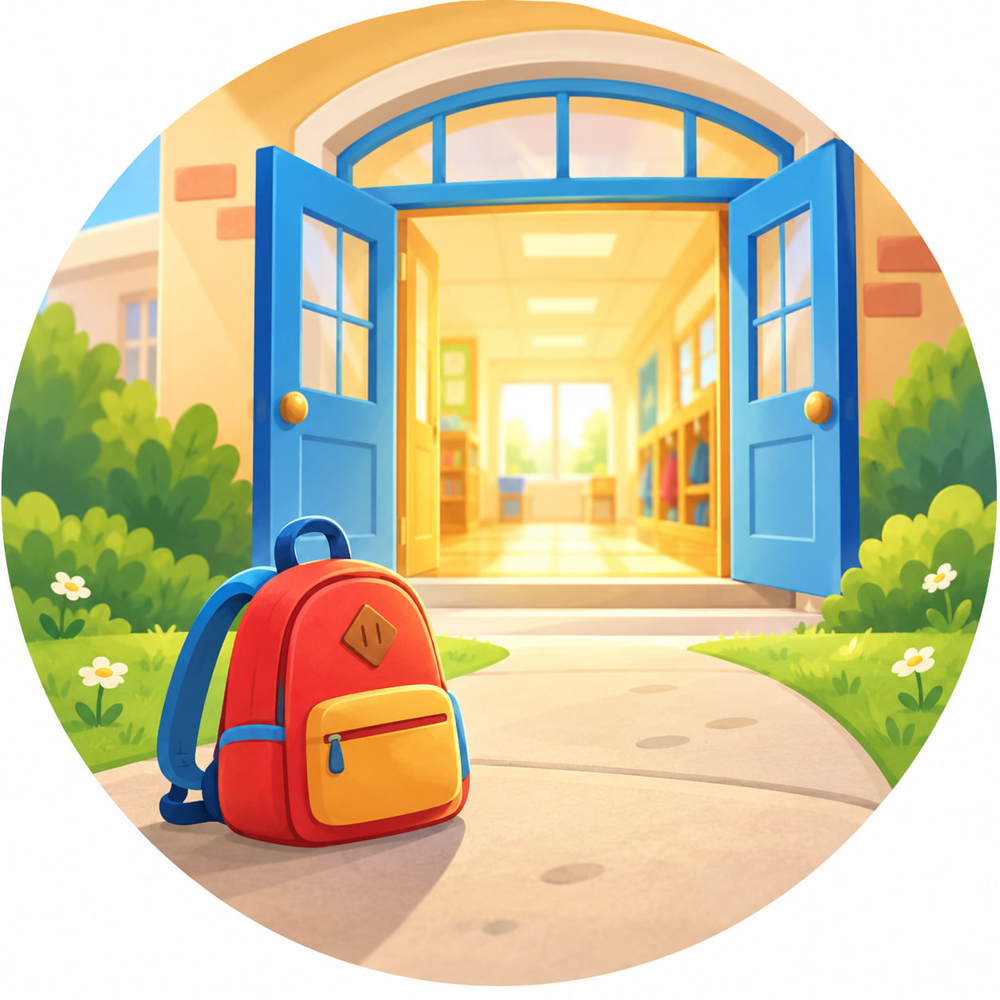

Вопрос № 1
Кого ты видишь на картинке?
Не удалось загрузить запись. Обновите страницу и попробуйте ещё раз.

Скоро в школуМаленькими шагами к большим открытиям
Всё для занятия — на одной странице.
Описание картинки: кто, где, что делает, какой.
Слушай вопросы по порядку. Отвечай полными предложениями.
Кого ты видишь на картинке?
Не удалось загрузить запись. Обновите страницу и попробуйте ещё раз.
Где гуляют дети? Что ты видишь вокруг них?
Не удалось загрузить запись. Обновите страницу и попробуйте ещё раз.
Какое время года изображено? Что помогло тебе догадаться?
Не удалось загрузить запись. Обновите страницу и попробуйте ещё раз.
Где стоит девочка и что она делает?
Не удалось загрузить запись. Обновите страницу и попробуйте ещё раз.
Какие листья держит девочка? Расскажи об их цвете и форме.
Не удалось загрузить запись. Обновите страницу и попробуйте ещё раз.
Во что одета девочка? Опиши её одежду.
Не удалось загрузить запись. Обновите страницу и попробуйте ещё раз.
Что делает мальчик? С какой игрушкой он играет?
Не удалось загрузить запись. Обновите страницу и попробуйте ещё раз.
Какая у мальчика машинка? Расскажи о её цвете и размере.
Не удалось загрузить запись. Обновите страницу и попробуйте ещё раз.
Где находится кошка? Расскажи, какая она и что делает.
Не удалось загрузить запись. Обновите страницу и попробуйте ещё раз.
Где стоит собака? Опиши её шерсть, уши и хвост.
Не удалось загрузить запись. Обновите страницу и попробуйте ещё раз.
Выбери девочку или мальчика. Расскажи о своём герое: кто это, где находится, что делает и как выглядит.
Не удалось загрузить запись. Обновите страницу и попробуйте ещё раз.
А теперь составь небольшой рассказ по всей картинке. Начни со слов: «Однажды осенью дети вышли гулять во двор…»
Не удалось загрузить запись. Обновите страницу и попробуйте ещё раз.
Рассмотрели картинку, описали героев, их действия и расположение. Подобрали слова-признаки и составили небольшой рассказ.
Внимательно послушай
Не удалось загрузить задание. Обновите страницу и попробуйте ещё раз.
Не удалось включить звуковой сигнал.
Ты внимательно слушал и находил правильное произношение.
Учимся управлять языком и направлять выдыхаемый воздух.
Не удалось загрузить видео. Обновите страницу и попробуйте ещё раз.
«Фокус», или «Сдуй ватку с носа», — артикуляционное упражнение, в котором ребёнок учится управлять языком и направлять выдыхаемый воздух.
Эти навыки используются при подготовке к произношению шипящих звуков. Задача ребёнка — не просто сдуть ватку любым способом, а сохранить нужное положение языка.
Выполняйте упражнение вместе перед зеркалом. Голову можно немного приподнять, чтобы ватка удерживалась на кончике носа. Следите, чтобы нижняя челюсть оставалась спокойной, а щёки не надувались. Между попытками отдыхайте. Если пока не получается, поддержите ребёнка: освоение нового движения требует времени.
11 материалов для печати: 4 раскраски, 4 разрезалки и 3 обводилки. Нажмите на лист, чтобы рассмотреть его крупнее, или скачайте PDF.